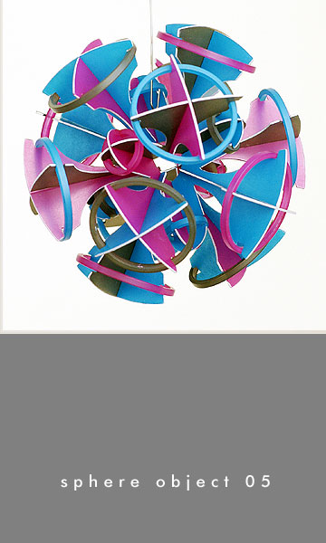
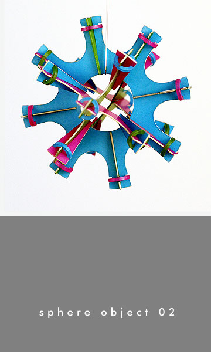
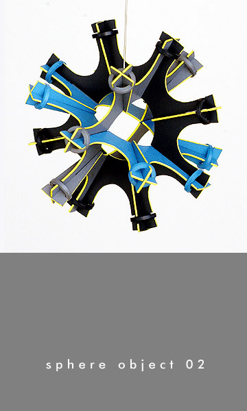
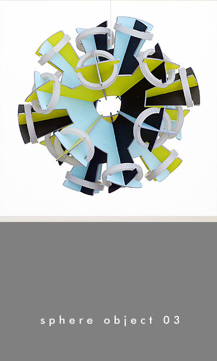
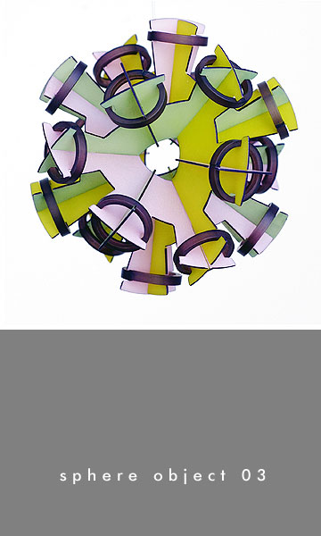
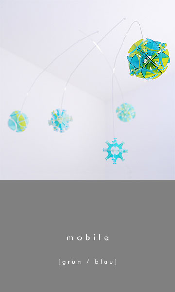
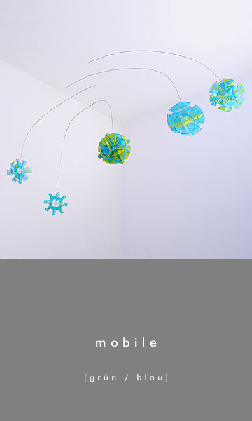
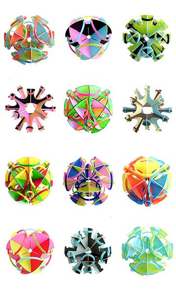

- 
- 
- 
- 
- 


- 
- 
- 
das Produkt
+ sind intelligente, futuristische
Raumaccessoires. Die zu Kugeln verbundenen Steck-Gefüge kann man
einzeln kaufen oder zu großzügigen, schwebenden Systemen
kombiniert. Bewegung und Licht sind die entscheidenden Mitspieler bei
diesen geometrischen Kompositionen. Die bunten Kunststoffelemente der
sphere objects + mobile sind zu offenen, durchlässigen Clustern
verschränkt. Schon ein leichter Luftzug genügt, um sie auf
eine Reise durch den Raum zu schicken. Die durchscheinende
Beschaffenheit des Materials bringt die eigenwillig-psychodelischen
Farbzusammenstellungen der Kugeln zum Leuchten. Sphärische Science
Fiction-Ästhetik, Mikrobiologie oder die Op- und Pop Art der
1960er Jahre - jede Assoziation ist zugelassen.
Der Hersteller ist das Label xemaroo. Der Werkstoff: ein 100% recycelbares
Polycarbonat. sphere objects + mobile werden am Computer entworfen.
Danach sind die Einzelteile industriell zugeschnitten, mattiert und
schließlich von Hand koloriert und zusammengefügt.
das Konzept
+ werden für das Label xemaroo von
designt und produziert. Das spielerische, endlos variierbare Stecksystem aus
Markrofol importierte sie dabei aus ihren erfolgreichen Schmuckkollektionen.
Der Computer als Entwurfslabor, die Nutzung industrieller Fertigungsmethoden
bei der Produktion und die manuelle Handhabung was die Colorierung´betrifft,
ergibt bei xemaroo eine elektrisierende, unsentimentale Mischung aus
High Tech und Handarbeit.
das Label
xemaroo interessiert sich für die emotionale Qualität der
Produkte: Ästhetik als Nutzwert. Das ist eine Forderung und ein Statement.
xemaroo begreift und benennt Schönheit als essentiell im menschlichen Alltag:
Eine (über-) lebensnotwendige Ressource, die allen offen steht und die sich als
unerschöpflich erweist, wenn Gestaltungskraft, Bewusstsein und Verantwortung
zusammen kommen. An der Schwelle zwischen Kunst und Design produziert xemaroo,
energieeffizient und umweltschonend, Objekte von höchstem Anspruch. Das
Gütesiegel „Made in Germany“ wird garantiert, vom Entwurf über die
Herstellung bis zum letzten Gestaltungsschritt.